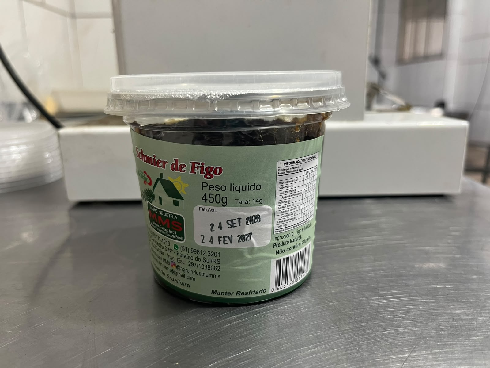
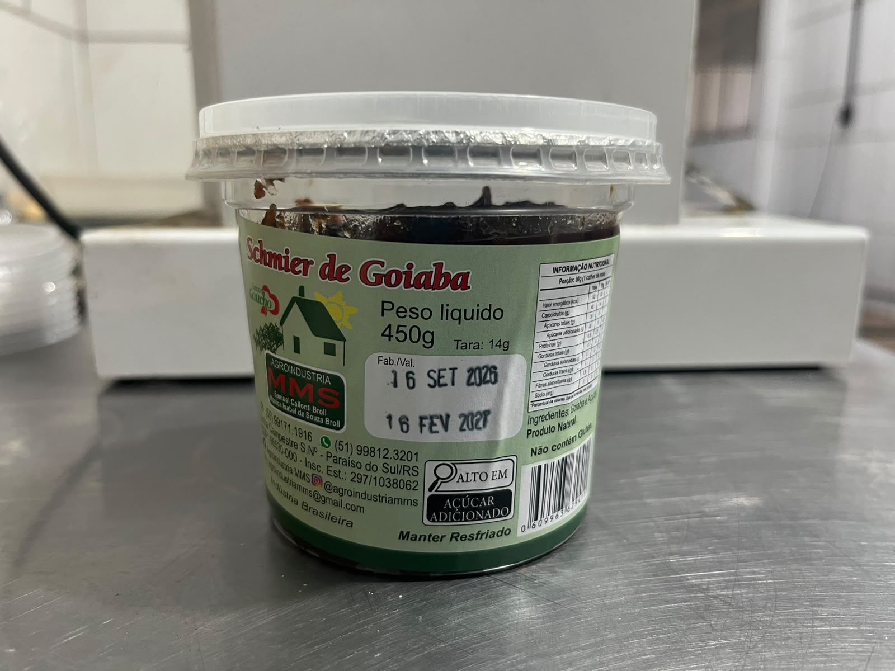

NOSSOS PRODUTOS
Produtos artesanais
Confira alguns dos produtos da Agroindústria MMS.

Geleia de Morango
Disponível em diferentes tamanhos.

schmier de figo
Disponível em diferentes tamanhos.

Schmier de Goiaba
Produto artesanal.

Melado Batido
Produto tradicional da agroindústria.

Melado Batido 800 g
Produto artesanal.

Melado Batido 2 kg
Produto artesanal.

Melado Batido 4,5 kg
Produto artesanal.

Rapadura 700 g
Rapadura artesanal.

Rapadura Moída
Disponível em diferentes tamanhos.

Rapadura Moleque
Produto artesanal.
Açúcar Mascavo
Embalagem de 500 g.
Melado Fino
Embalagem de 500 ml.
Schmier Colonial
Disponível em diferentes tamanhos.